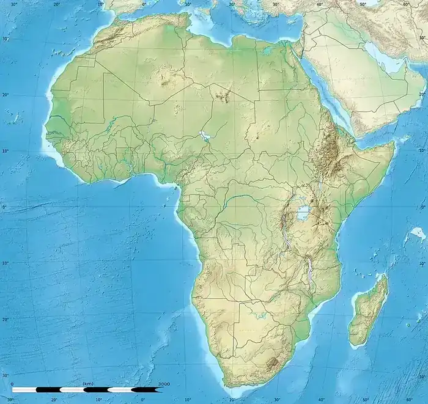
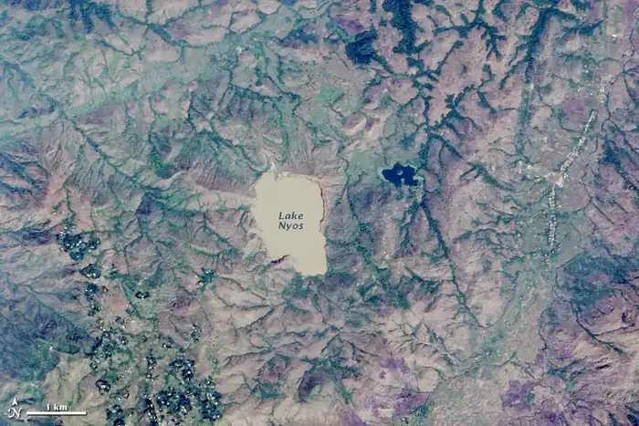
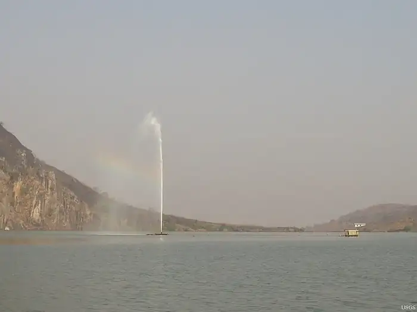

The event
On 21 August 1986, Lake Nyos in Cameroon released a large volume of carbon dioxide. The gas, denser than air, flowed down the valleys and suffocated people and livestock in nearby villages — around 1,700 deaths, with survivors found unconscious.
Maps, diagrams and images






The mechanism
The lake is volcanic, and its deep water is saturated with CO₂ from below. Normally the layers stay separate; a disturbance — a landslide, a temperature change — can overturn the lake and release the gas catastrophically. A similar event at Lake Monoun in 1984 killed 37 people.
Since 2001, a degassing pipe has been installed at Nyos, venting CO₂ continuously and keeping the deep water below saturation. It is one of the few cases of a natural hazard being engineered out of existence.
Documented: the event, the deaths and the mechanism.
Documented: the earlier Monoun event.
Documented: the degassing installation and its effect.
Not mysterious: no exotic cause is required.
The label: documented.
Why it is in the archive
Because it is the rare case of a mass-casualty event with a fully understood cause and a working fix, and because it is often cited in support of claims it does not support.
Open resources on this topic
- BookBacterial and archaeal communities in Lake Nyos (Cameroon, Central Africa). — ['Tiodjio, Rosine E.', 'Sakatoku, Akihiro', 'Nakamura, Akihi · 2014 (Internet Archive, free to read)
- PapersOpen-access articles: DOAJ · PubMed Central · Internet Archive Scholar
- BooksPublic-domain and borrowable copies: Open Library · Project Gutenberg · Google Books
More images
Cite this page
Momin, S. (2026). Lake Nyos. The Larger World Archive. https://drsamonline.github.io/LARGE_GLOBE/lake-nyos.htmlMomin, Sohil. “Lake Nyos.” The Larger World Archive, 2026, https://drsamonline.github.io/LARGE_GLOBE/lake-nyos.html.Momin, Sohil. “Lake Nyos.” The Larger World Archive, 2026. https://drsamonline.github.io/LARGE_GLOBE/lake-nyos.html.@misc{lake2026lake,
author = {Momin, Sohil},
title = {Lake Nyos},
year = {2026},
howpublished = {The Larger World Archive},
url = {https://drsamonline.github.io/LARGE_GLOBE/lake-nyos.html},
note = {Last reviewed 20 November 2026}
}Last reviewed 20 November 2026 · Corrections policy · this page is not peer reviewed
Sources for this page
- Wikipedia, “Lake Nyos” — the lake and the disasteren.wikipedia.org
- Wikipedia, “Limnic eruption” — the mechanismen.wikipedia.org
- Wikipedia, “Lake Monoun” — the earlier eventen.wikipedia.org
- Wikipedia, “Carbon dioxide” — the gas and its densityen.wikipedia.org